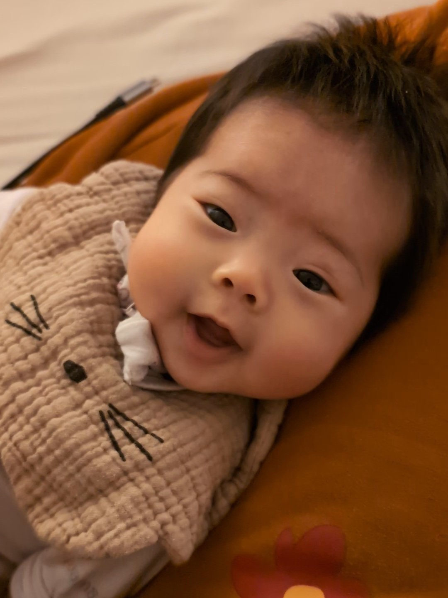

Author: Yih-Chun, translated by Evelyn
Our dearest Cecelia,
Even while you were still in the womb, you were loved. Your parents and your sisters experienced your kicks, prepared the house for you, and talked to you as you grew. Your sisters willingly gave up several toys that might have put you at risk. They wrote you cards full of love, wishes, and advice. Your parents cleared out space for the toys you would certainly accumulate, places where you could safely play, the nursery where you would spend your first months. We joyfully welcomed you into the world on January 3rd to the great anticipation of your parents, sisters, grandparents, aunt and uncle, our church communities, co-workers, and other family friends.
You were born with a full head of hair, big, bright eyes, and tiny little hands and feet. You immediately took a liking to being held, and we looked at you in wonder as we passed you from mother to father to the two big sisters. You were so trusting as we passed you from person to person, and whenever we picked you up, you would stop crying, because you trust that food was just around the corner. Your gentle snoring became the heartbeat of our house. When you began smiling at us after about 7 weeks, those smiles melted our hearts. We arranged our lives around this angel baby.
You became the star of the show in every room you entered— whether at church, our small group, fellowship, our favorite bakeries, or when picking the girls up from dance. So many people wanted to see you, hold you, and play with you. Even outside our family, there was so much love for you, and you brought so much joy to those around you, in all of our communities. Your sisters wanted to bring you to school to show you off to their friends and teachers, but sadly we didn't have that chance.
There was so much we were waiting to experience with you— more photos to remember your baby smiles, a family trip with you to spend time together and to let you meet your great grandmother, your one-year-old cake smash. We eagerly awaited your first crawl, your first steps, your first words, your first day at school, the first time you would ride a bike. We wanted to show you the wonder of this world that God created: math, science, music, art, and nature.
It's still surreal, as we write this, to think that you were snatched from our arms in a moment. It's hard to understand why this happened. Our grief is overwhelming. Yet, in the end, we know that God is good, and we know that you are in heaven. We will go to you, you will not come to us, but until that day, we will miss you dearly. Thank you for your innocent faith in us. We are so sorry we could not do more for you. We would give anything for one more chance to hold you, to feed you, to change your diaper, to give you a bath. Today, we come to say goodbye to what remains of you here, a tiny body that carried our hopes and dreams, but not to your memory, which will ever be with us. Our lives will never be the same.
With all our love,
Daddy and Mommy
我們最親愛的 Cecelia,
當妳還在媽媽肚子裡時,妳就已經被愛著. 妳父母和姊姊們隔著媽媽肚子 摸著妳踢媽媽. 我們為妳收拾房子, 在妳成長中與妳說話. 姊姊們心甘情願收了可能會對妳有危險的玩具, 寫卡片給妳—滿滿都是愛, 祝福和忠告. 妳父母為妳的玩具騰出空間, 整修讓妳可以安全玩耍的地方, 以及準備妳的嬰兒房. 在妳的父母, 姊妹, 祖父母, 舅舅, 姑姑, 教會, 父母同事, 和其他家人朋友的熱切期待中, 我們在 1 月 3 日歡喜地迎接妳的出生.
妳一出生就有一頭濃密的黑髮, 眼睛又大又亮, 小小的手 小小的腳. 妳生出來就喜歡被抱著. 當我們把剛出生的妳 從媽媽抱給爸爸 再抱給兩個大姊姊時, 我們都歡喜的對著妳看了又看. 把妳從一人傳給另一人時, 妳是那麼的信任我們. 當妳哭時, 我們一抱起妳, 妳就馬上不哭, 因為妳相信奶一下就來. 妳輕輕的鼾聲成為家中的心跳. 大約七周後, 妳開始對我們笑, 那些笑容融化了我們的心. 我們的生活開始圍繞著這個天使寶寶轉.
不管什麼場合妳都是中心, 無論是在教會, 小組, 團契, 我們最喜歡的麵包店, 或是姊姊的跳舞班, 好多人都想見妳, 抱妳, 和妳玩. 就算在我們的家之外, 也有很多人愛妳. 在我們所有的生活圈裡, 妳為周圍的人帶來了很多歡樂. 姊姊們好多次想帶妳到學校跟同學老師炫耀,. 只可惜, 我們沒有等到這個機會.
我們有好多期待與妳一起體驗事情--拍更多照片來紀錄妳嬰兒時期的笑容, 帶著妳我們全家一起旅行, 讓曾祖母見見妳, 還等著妳一週歲時吃蛋糕吃得滿臉. 我們熱切期待妳第一次爬, 第一次走路, 第一次說話, 第一次上學, 第一次騎腳踏車. 我們想帶妳看神所創造的這個世界的奇妙：數學, 科學, 藝術, 音樂和大自然.
當我們寫這封信時, 想到妳一瞬間從我們懷抱中被奪走, 仍然很不真實. 我們很難理解為什麼發生這種事. 我們的悲痛幾乎無法承受. 然而, 最終我們知道神是好的, 我們知道妳在天堂等我們. 我們必往妳那裡去, 妳卻不能回我這裡來. 但在那一天到來之前, 我們會深深地想念妳. 感謝妳對我們純真的信任. 我們很遺憾不能為妳做得更多. 我們願意付出一切, 只為多一次抱妳, 餵妳, 幫妳換尿布, 幫妳洗澡. 今天, 我們與妳留下的身體說再見. 這個小小的身體本來承載了我們許多希望和夢想, 但我們不會向妳的記憶說再見, 妳的記憶永遠與我們同在. 我們的人生也因妳而永遠改變.
愛妳的, 爸爸媽媽